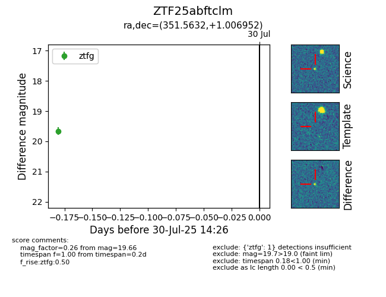

Target ZTF25abftclm at 2025-07-30 14:26, see:
FINK: fink-portal.org/ZTF25abftclm
Lasair: lasair-ztf.lsst.ac.uk/objects/ZTF25abftclm
ALeRCE: alerce.online/object/ZTF25abftclm
alt names
ZTF25abftclm (ztf,fink)
coordinates:
equatorial (ra, dec) = (351.5632,+1.00695)
galactic (l, b) = (83.4258,-55.19243)
photometry
last ztfg=19.66
1 ztfg detections
